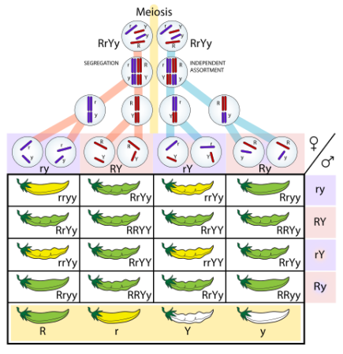

Welcome to the Inheritance Simulator!
Select a trait from the navigation bar to test the inheritance of different characteristics.
What is Mendelian Genetics?
Mendelian genetics is the study of how traits are inherited from one generation to the next, based on the work of Gregor Mendel. Mendel discovered that traits are passed on through discrete units called alleles, which can be dominant or recessive.
In this simulator, you can explore how different traits are inherited based on the combinations of alleles from the parents.
Common Traits Explored
Eye Color
Eye color is determined by multiple genes, with brown being the dominant trait over blue and green.
Skin Color
Skin color is a polygenic trait influenced by several genes that produce a wide range of shades.
Height
Height is also influenced by many genes and can be affected by environmental factors.
Blood Type
Blood type is determined by the presence of specific antigens on the surface of red blood cells. The ABO blood group system includes types A, B, AB, and O, with O being the most common. Additionally, the Rh factor can be either positive or negative, providing further classification of blood types.
How to Use the Simulator
- Navigate to the desired trait tester from the menu above.
- Select the parent traits you want to test.
- Click the "Calculate" button to see possible offspring traits.
- Review the results displayed for potential offspring characteristics.
Visual Aid
This diagram illustrates the basic principles of Mendelian inheritance.